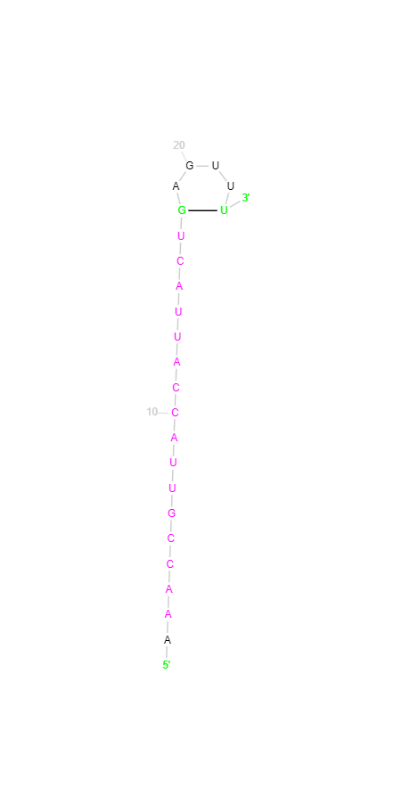
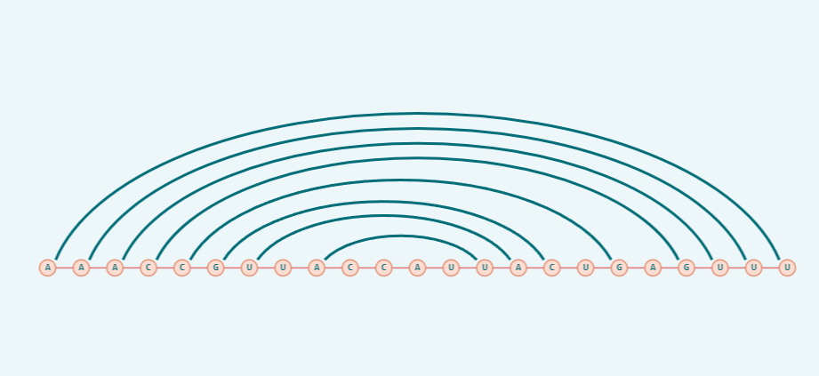
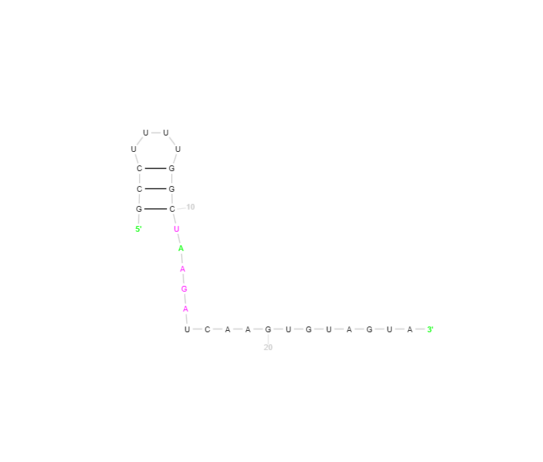
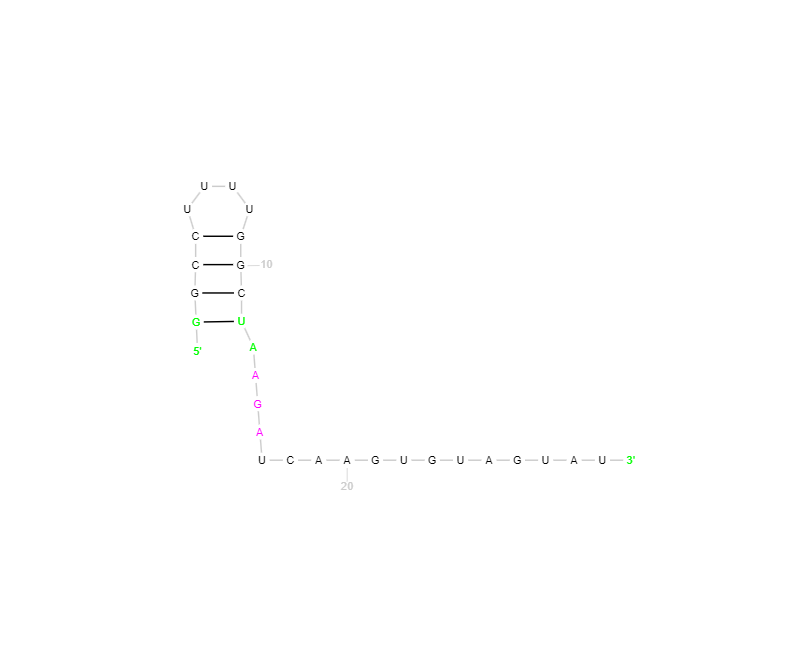
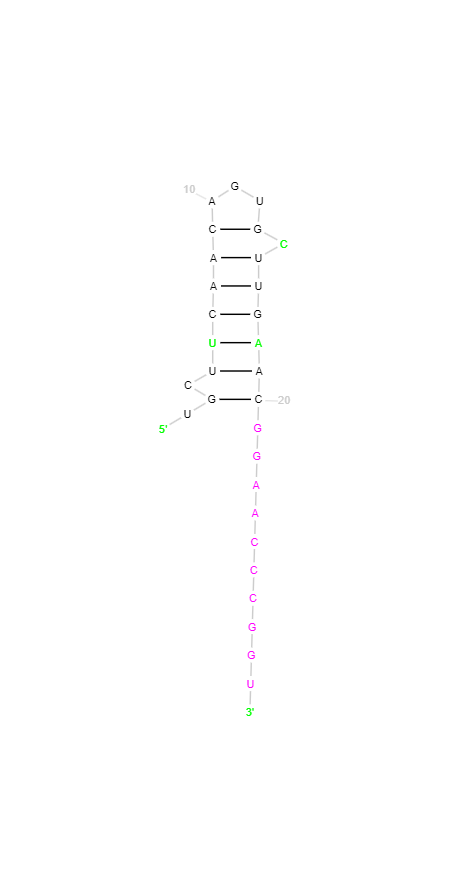
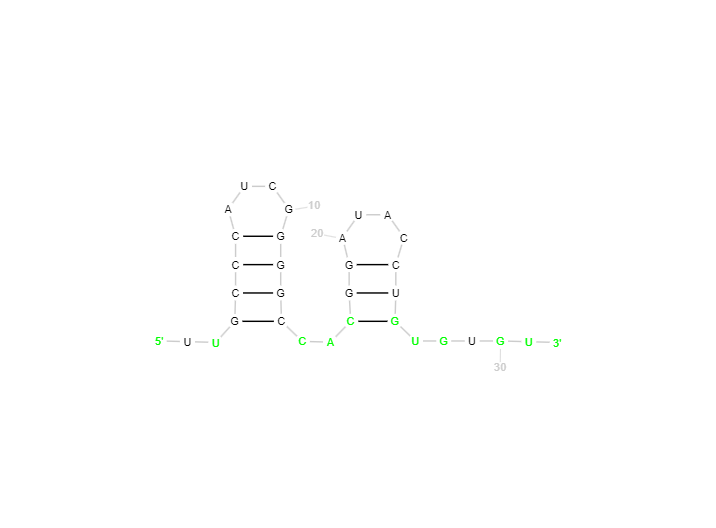

Algorithm Discussion
The RNA folding algorithm presented follows a dynamic programming approach to predict the secondary structure of an RNA molecule. It defines a recurrence relation OPT(i, j) to calculate the maximum number of base pairs in the secondary structure for the substring from index i to j of the given RNA sequence.
The aim of this algorithm is to find the optimal secondary structure for a given RNA molecule, which is a crucial factor in determining its biological function and behavior. RNA molecules are single-stranded and can fold into complex two-dimensional structures through complementary base pairing. The secondary structure plays a vital role in governing the overall structure and function of the RNA molecule.
The algorithm works by considering all possible base pairings between the nucleotides in the RNA sequence and evaluating the maximum number of base pairs that can be formed while satisfying certain constraints. These constraints include:
- No sharp turns: The ends of each base pair must be separated by at least four intervening bases.
- Complementary base pairing: Only certain pairs of bases can match, such as Adenine with Uracil, and Cytosine with Guanine.
- No knots: The secondary structure must be knot-free, ensuring that no base pairs cross each other.
The final answer given by the algorithm is the optimal secondary structure, represented as a set of base pairs that maximizes the number of complementary pairs while adhering to the constraints. This secondary structure prediction is valuable in various fields, including:
- Molecular biology: Understanding the structure and function of RNA molecules involved in gene expression, regulation, and other cellular processes.
- Drug design: Identifying potential binding sites on RNA molecules for developing therapeutic agents targeting specific RNA structures.
- Evolutionary studies: Analyzing the conservation and evolution of RNA structures across different organisms.
The algorithm's efficiency and accuracy in predicting secondary structures make it a valuable tool in computational biology and bioinformatics research.
Code Documentation
test.cpp:
The code implements the Nussinov algorithm to find the maximum number of base pairs in the optimal secondary structure of a given RNA sequence. It uses dynamic programming to fill a 2D array dp with the maximum number of base pairs possible for each substring s[i:j+1]. The base cases are dp[i][i] = 0 (no base pairs in a single nucleotide) and dp[i][i+1] = 0 (no base pairs in a pair of adjacent nucleotides).
For longer substrings, dp[i][j] is calculated as the maximum of:
dp[i][j-1](excluding the last nucleotide)1 + dp[i][t-1] + dp[t+1][j-1]ifs[t-1]ands[j-1]can form a base pair, plus the maximum number of base pairs in the substringss[i:t]ands[t+1:j].
dp, a backtracking step reconstructs the optimal structure using a queue. The mp array stores the indices t where the optimal base pair is formed for each dp[i][j]. The dot-bracket notation is built by adding parentheses for base pairs and dots for unpaired nucleotides.
The main function reads an RNA sequence, calls rna_folding, and prints the resulting dot-bracket notation.
generate_testcases.cpp:
This code generates test cases to analyze the run-time of test.cpp by using functions from the chrono library in C++. It takes in the size of the RNA sequence to be generated and proceeds to create an RNA sequence appeneded with the nucleotides "AGCU".
app.js:
This contains javascript code that interacts with a WebAssembly module containing a function called rna_folding_c.
Specifically, the code does the following related to the RNA folding algorithm:
- It waits for the WebAssembly module to finish initializing.
- When the user submits an RNA sequence through an input field (presumably a form or button click), it retrieves the input string.
- It allocates memory in the WebAssembly module's linear memory to store the input RNA sequence.
- It calls the
rna_folding_cfunction exported by the WebAssembly module, passing the input RNA sequence as an argument. - It receives a pointer to a buffer containing the computed dot-bracket notation of the optimal secondary structure from the
rna_folding_cfunction. - It converts the buffer to a JavaScript string and displays it in an output field.
- It frees the memory allocated for the input and output buffers in the WebAssembly module's linear memory.
The actual function for rna_folding is written in C++ in main.cpp that contains the same code as in test.cpp but inside extern "C" that can be compiled to WebAssembly and imported into the JavaScript code as a WebAssembly module.
index.html:
Has the basic structuring code for defining the skeletal structure of the landing page and the documentation page. Also has some CSS to define the styling of the HTML elements.
Experimental Results
1. Actual 2D-Structure
1. Predicted 2D-Structure
2. Actual 2D-Structure
2. Predicted 2D-Structure
3. Actual 2D-Structure
3. Predicted 2D-Structure

4. Actual 2D-Structure
4. Predicted 2D-Structure
5. Actual 2D-Structure
5. Predicted 2D-Structure
Observations & Remarks:
We observe that the number of pairings in predicted and actual 2D-structures do not match in most cases, and infact we observe that the number of pairings that our algorithm does is more than the actual number of pairings observed. This is because, our algorithm finds the maximum number of pairings that can be done solely based on the conditions provided to us, whereas in real-life, RNA being a 3D structure, has much more restrictions.
Issues in Coding
- One difficulty we faced during implementation was including the panning and zooming features into the SVG canvas for visualizing the predicted secondary structure.
- Another difficulty faced was figuring out how to use a C++ file's functions in JavaScript using WebAssembly (WASM). We needed to do this because, the algorithm was asked to be written using only C/C++/Java, but the visualization had to be done using HTML/CSS/JS. So, there was a need for the javascript function to access the C++ code we have written as soon as an RNA code was given. In addition to this, compiling the C++ code using WASM was challenging given the number of parameters and dependencies involved.
Timing Analysis
| Length of RNA | Time Elapsed |
|---|---|
| 10 | 7904μs |
| 50 | 66733μs |
| 100 | 67963μs |
| 200 | 77943μs |
| 500 | 191887μs |
| 1000 | 1071458μs |
| 2000 | 9455342μs |
| 3000 | 35237457μs |

Time Complexity Analysis of Nussinov Algorithm
The Nussinov algorithm is used for predicting the secondary structure of RNA molecules. It is based on dynamic programming and has a time complexity of \( O(n^3) \), where n is the length of the RNA sequence.
Explanation
The algorithm builds a dynamic programming table to find the optimal secondary structure. The table is of size n x n, where n is the length of the RNA sequence. Each cell in the table represents the maximum number of base pairs that can be formed in a subsequence of the RNA sequence.
Time Complexity
Since there are \( O(n^2) \) subproblems, where each subproblem is a cell, therefore, constructing the dynamic programming table involves filling in each cell by considering all possible base pairs. This requires nested loops over the length of the RNA sequence. Therefore, the time complexity of the algorithm is \( O(n^3) \).
Conclusion
The Nussinov algorithm is an efficient approach for predicting the secondary structure of RNA molecules, with a time complexity of \( O(n^3) \). This makes it suitable for analyzing large RNA sequences efficiently.